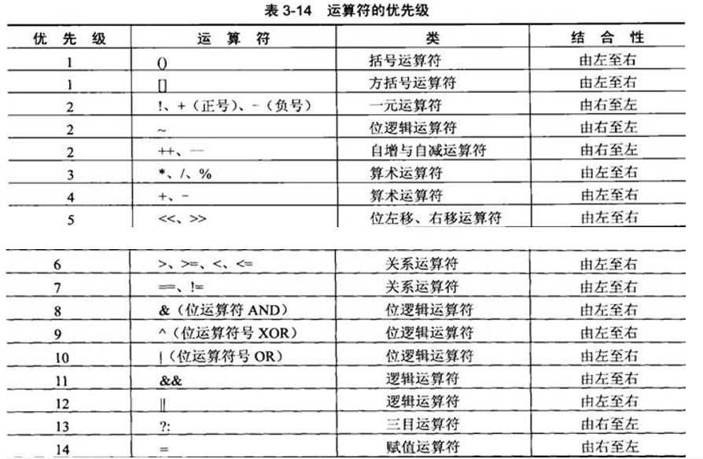

口诀：赋一算关自，逻括位方三；
1、 赋值运算符
= 将右边的值赋予给左边的变量（注意，=在Java中并不是等于的意思）
2、一元运算符
+ 表示正号（一般作用于数值）
- 表示负号（一般作用于数值）
3、算数运算符
+ 加法
- 减法
* 乘法
/ 除法
% 求模（求余数）
a+=b 将a+b的值赋予a
a-=b 将a-b的值赋予a
a*=b 将a*b的值赋予a
a/=b 将a/b的值赋予a
a%=b 将a%b的值赋予a
4、关系运算符
关系运算符常常用于布尔表达式，判断一个条件为true还是false；
注意：null对象和任何基本类型进行关系运算，不论null在前还是在后都会报NullPointException。
> 大于
< 小于
>= 大于等于
<= 小于等于
== 等于
!= 不等于
5、自增自减运算符
++ 变量值加1
-- 变量值减1
注意对于变量的初始化可以放在同一条语句中，用逗号隔开。
package javase.demo01.se.lixinghua;
/**
* i++
*
* i--
*
* ++i
*
* --i
*
* @类名称： Demo11ZiZengZiJian
* @作者： zhaoerhu
* @创建时间： 2019-2-9
* @修改时间： 2019-2-9下午7:31:53
* @备注：尊重每一行代码！
*/
public class Demo11ZiZengZiJian {
public static void main(String[] args) {
int a = 2, b = 3;
System.out.println((a++) + (++b));
}
}
6、逻辑运算符
& AND，与
&& 短路与
| OR，或
|| 短路或
! 表示非（一般作用于布尔表达式或者布尔值）
短路与和短路或
package javase.demo01.se.lixinghua;
import org.junit.Test;
/**
* 短路与，短路或
*
* 一般建议使用短路与和短路或
*
* @类名称： Demo12DuanLu
* @作者： zhaoerhu
* @创建时间： 2019-2-9
* @修改时间： 2019-2-9下午7:37:50
* @备注：尊重每一行代码！
*/
public class Demo12DuanLu {
@Test
public void test1() {
int a = 10, b = 0;
// 非短路与，所有条件都挨个判断
if (a == 100 & a / b == 0) {
System.out.println("aa");
} else {
System.out.println("不符合条件...");
}
}
@Test
public void test2() {
int a = 10, b = 0;
// 短路与，第一个条件为假，则后面的条件不执行
if (a == 100 && a / b == 0) {
System.out.println("aa");
} else {
System.out.println("不符合条件...");
}
}
@Test
public void test3() {
int a = 10, b = 0;
// 非短路或，所有条件挨个判断
if (a == 10 | a / b == 0) {
System.out.println("aa");
} else {
System.out.println("不符合条件...");
}
}
@Test
public void test4() {
int a = 10, b = 0;
// 短路或，第一个条件为真，则后面的条件不执行
if (a == 10 || a / b == 0) {
System.out.println("aa");
} else {
System.out.println("不符合条件...");
}
}
}
7、括号运算符
() 提高括号中表达式的运算符优先级
8、位运算符
& 按位与
| 按位或
^ 异或（相同为0，不同为1）
~ 取反
<< 左移位
>> 右移位
>>> 无符号右移位
9、方括号运算符
[] 定义数组、访问数组元素的下标
10、三目运算符
?: 变量=条件判断?表达式1:表达式2
根据条件判断是否成立决定结果为:前的值还是:后的值，若条件判断为true，则变量为表达式1，否则为表达式2
11、运算符优先级

最后一列是运算符的结合性，结合性可以让程序设计者了解到运算符和操作数之间的关系和相对位置。
当使用同一优先级的运算符的时候，结合性就非常重要，它决定谁先被计算，如下面的例子：
a = b + d/5 * 4;
这个表达式中含有不同优先级的运算符，其中”/”和”*”的优先级高于”+”，而”+”又高于赋值运算符”=”，但是”/”和”*”的优先级是相同的，究竟是d该先除以5再乘以4呢，还是5先乘以4再被d除以这个结果呢？结合性的定义就解决了这方面的困扰。
算数运算符的结合性是由左至右，就是在相同优先级的算数运算符中，先由运算符左边的操作数开始处理，再处理右边的操作数。上面的式子中，由于”/”和”*”的优先级相同，因为d会先除以5再乘以4得到的结果加上b后，再将整个值赋值给a存放。
一般都是用括号运算符显式修改结合性。